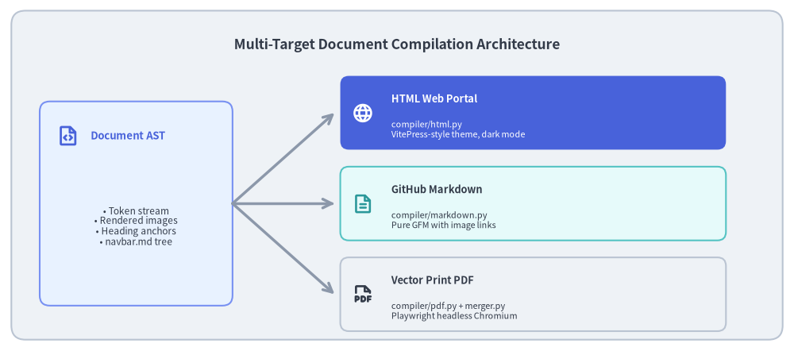
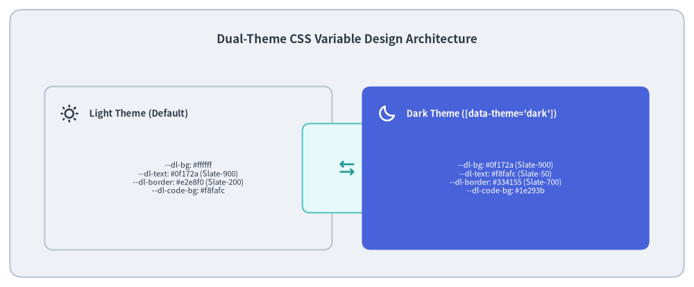

Multi-Target Exporters (HTML, Markdown, PDF)
A core requirement of enterprise technical documentation is multi-format versatility. Engineers read documentation on GitHub repositories, architects study polished documentation websites, and compliance teams require immutable vector PDFs for RFCs and audits.
Drawlib's document builder (_builder/doc_builder/) provides Multi-Target Compilation: a single source Markdown directory (*_src/) compiles simultaneously into an interactive web portal (*_html/), clean GitHub Flavored Markdown (*_markdown/), and a print-ready vector PDF (*.pdf).

Source Code
from drawlib.canvas import save, setup
from drawlib.icons import phosphor
from drawlib.lines import line
from drawlib.shapes import rectangle
from drawlib.styles import Styles
from drawlib.text import text
setup(width=140, height=62)
rectangle((70, 31), width=136, height=58, style=Styles.Neutral.patch(shape_r=2.5))
text(
(70, 54),
"Multi-Target Document Compilation Architecture",
style=Styles.DarkBold.patch(text_size=12.5),
)
# Root AST Node (Left)
rectangle((24, 26), width=34, height=36, style=Styles.PrimaryNeutral.patch(shape_r=1.8))
phosphor.file_code((12, 38), width=4.0, style=Styles.PrimaryBold)
text((16, 38), "Document AST", style=Styles.PrimaryBold.patch(halign="left", text_size=9.5))
text(
(24, 22),
"• Token stream\n• Rendered images\n• Heading anchors\n• navbar.md tree",
style=Styles.Dark.patch(text_size=8.5),
)
# 3 Exporter Targets on Right
exporters = [
(42, "HTML Web Portal", "compiler/html.py\nVitePress-style theme, dark mode", phosphor.globe, Styles.PrimaryFlat, Styles.WhiteBold),
(26, "GitHub Markdown", "compiler/markdown.py\nPure GFM with image links", phosphor.file_text, Styles.SecondaryNeutral, Styles.SecondaryBold),
(10, "Vector Print PDF", "compiler/pdf.py + merger.py\nPlaywright headless Chromium", phosphor.file_pdf, Styles.Neutral, Styles.DarkBold),
]
for y, title, desc, icon_func, card_style, icon_style in exporters:
rectangle((94, y), width=68, height=13, style=card_style.patch(shape_r=1.5))
icon_func((64, y), width=3.8, style=icon_style)
title_style = Styles.WhiteBold if card_style == Styles.PrimaryFlat else Styles.DarkBold
desc_style = Styles.White if card_style == Styles.PrimaryFlat else Styles.Dark
text((69, y + 2.5), title, style=title_style.patch(halign="left", text_size=9.2))
text((69, y - 3.0), desc, style=desc_style.patch(halign="left", text_size=7.8))
# Connector from root
line((41, 26), (59, y), arrow_head="->", style=Styles.MutedBold)
save()
1. Concept: Single Source of Truth, Zero Format Fragmentation
In traditional workflows, maintaining web documentation and PDF specifications requires separate authoring tools (e.g. Docusaurus for web, LaTeX for PDF, raw Markdown for GitHub). When changes occur, synchronizing formatting across all three outputs is tedious and error-prone.
Drawlib eliminates this fragmentation by executing drawing code blocks once and serializing the resulting document AST through specialized target exporters:
| Exporter | Compiler Module | Primary Output | Key Capabilities |
|---|---|---|---|
| HTML | compiler/html.py |
docs_html/ |
VitePress-inspired theme, sidebar navigation, instant dark mode, responsive layout. |
| Markdown | compiler/markdown.py |
docs_markdown/ |
Clean GitHub Flavored Markdown with relative image links for native Git viewing. |
compiler/pdf.py |
document.pdf |
Vector graphic embedding, automated pagination, page headers/footers, Playwright Chromium print. |
2. Positioning: HTML Theme Engine & Design Tokens
The HTML exporter (compiler/html.py) combines Jinja2 HTML templates (template.html) and responsive CSS variables (style.css):

Source Code
from drawlib.canvas import save, setup
from drawlib.icons import phosphor
from drawlib.lines import line
from drawlib.shapes import rectangle
from drawlib.styles import Styles
from drawlib.text import text
setup(width=140, height=58)
rectangle((70, 29), width=136, height=54, style=Styles.Neutral.patch(shape_r=2.5))
text(
(70, 50),
"Dual-Theme CSS Variable Design Architecture",
style=Styles.DarkBold.patch(text_size=12.2),
)
# Left Column: Light Theme
rectangle((38, 24), width=58, height=33, style=Styles.Neutral.patch(shape_r=1.8))
phosphor.sun((14, 35), width=3.8, style=Styles.DarkBold)
text((18, 35), "Light Theme (Default)", style=Styles.DarkBold.patch(halign="left", text_size=9.5))
text(
(38, 22),
"--dl-bg: #ffffff\n--dl-text: #0f172a (Slate-900)\n--dl-border: #e2e8f0 (Slate-200)\n--dl-code-bg: #f8fafc",
style=Styles.Dark.patch(text_size=8.0),
)
# Center: Toggle Mechanism
rectangle((70, 24), width=18, height=18, style=Styles.SecondaryNeutral.patch(shape_r=1.5))
phosphor.arrows_left_right((70, 24), width=4.0, style=Styles.SecondaryBold)
# Right Column: Dark Theme
rectangle((102, 24), width=58, height=33, style=Styles.PrimaryFlat.patch(shape_r=1.8))
phosphor.moon((78, 35), width=3.8, style=Styles.WhiteBold)
text((82, 35), "Dark Theme ([data-theme='dark'])", style=Styles.WhiteBold.patch(halign="left", text_size=9.2))
text(
(102, 22),
"--dl-bg: #0f172a (Slate-900)\n--dl-text: #f8fafc (Slate-50)\n--dl-border: #334155 (Slate-700)\n--dl-code-bg: #1e293b",
style=Styles.White.patch(text_size=8.0),
)
save()
Theme System Features:
- Instant Dark Mode Toggle: Uses
localStorageand prefers-color-scheme with zero render flash (data-theme="dark"). - Subtle Dividers & High Contrast: Built with modern Tailwind/VitePress standard neutrals (
#334155border tokens,#f8fafcdark text) to ensure readability for technical diagrams. - Collapsible Code Blocks: Renders embedded drawing code inside
<details class="drawlib-code">disclosure blocks.
3. Details: Vector PDF & Markdown Export Mechanics
3.1. High-Resolution Vector PDF Generation
When exporting to PDF (drawlib build pdf):
- Chapter Merging (
merger.py): Concatenates individual chapter Markdown files in the sequence defined bynavbar.mdinto a single continuous print document. - Vector Graphic Injection: References vector
.svgimage files rather than bitmap PNGs to ensure crisp, infinite resolution on print. - Headless Chromium Print: Launches Playwright with Chromium in headless mode, applies
@media printrules, generates page counters, and streams the output to a compact PDF.
3.2. Pure GitHub Flavored Markdown Export
When exporting to Markdown (drawlib build markdown):
- Strips HTML-specific interactive tags (
<details>,<summary>). - Rewrites
drawlibcode blocks to pure Markdown image syntax (e.g.,! [Caption](path/to/diagram.png)). - Replaces internal
.htmllinks with relative.mdreferences for seamless navigation inside GitHub repository browsers.
Next, explore how link integrity and path hygiene are enforced in Link & Quality Scanner.